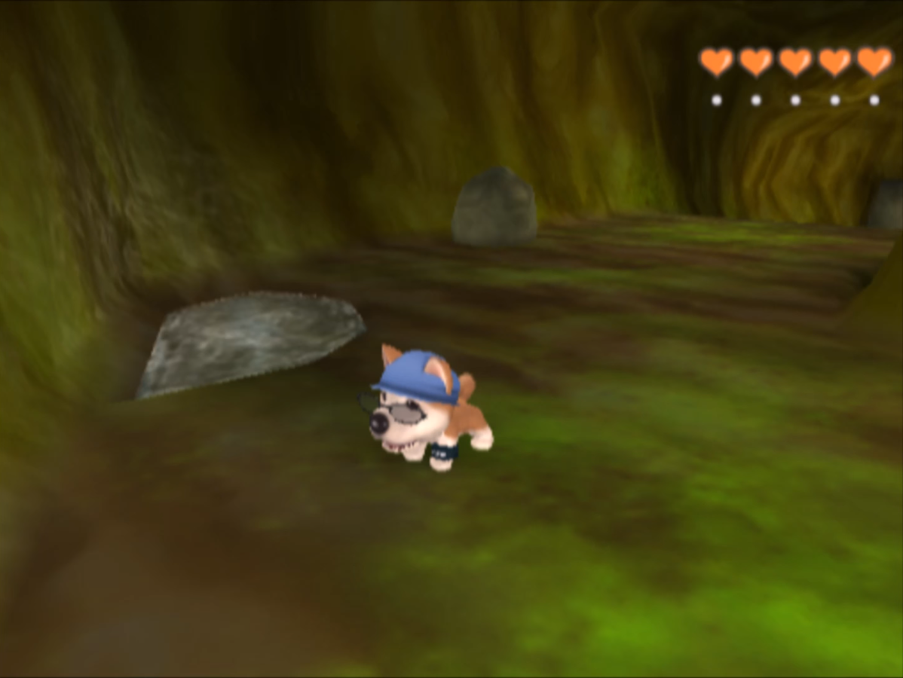
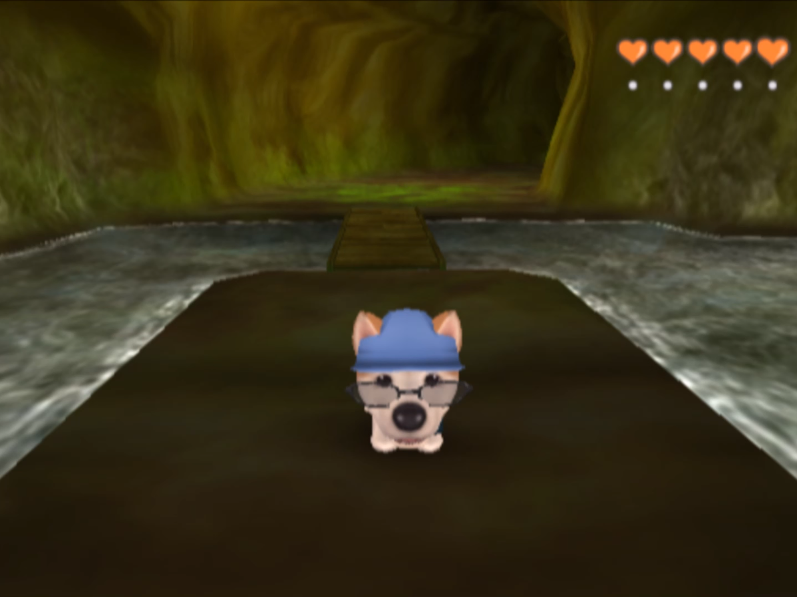
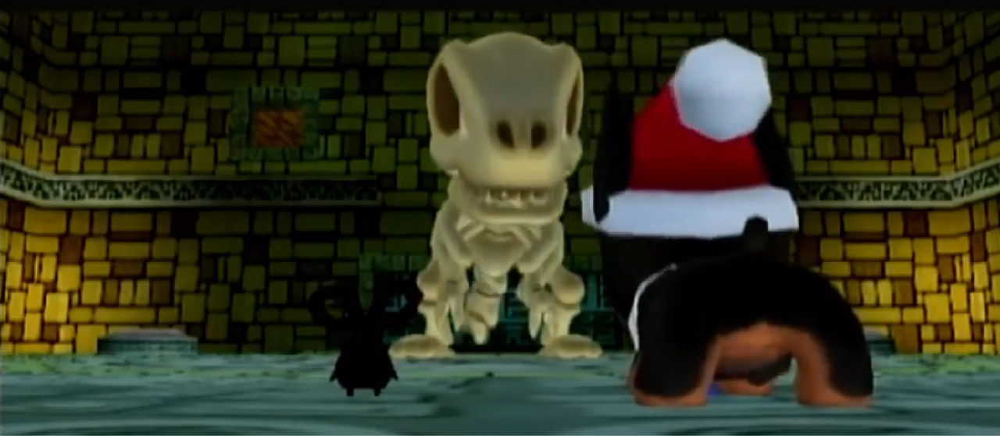

Al comenzar se nos presenta nuestro protagonista, su madre y su hermana o hermano dependiendo del género elegido para el protagonista, tras un momento de cumplir con algunos encargos y conocer a los otros habitantes del pueblo te enteras que habrá una celebración por la noche y decides ir, tu hermana/o decide acompañarte a pesar de que su salud no es la mejor, todo transcurre bien hasta el final de la celebración, cuando la salud de tu hermana/o empeora gravemente por lo que debes regresar a casa. En ese momento es cuando te enteras que tu padre no está en casa ya que hace un tiempo Salió a buscar una medicina para tu hermano/a pero desafortunadamente no volvieron a saber de él. Después de que el Dr. Hill confirma que no puede curar al hermano/a enferma, nuestro protagonista emprende una aventura en THE DOG Island para ver si el famoso Dr. Potan puede ayudarlo. Cuando llegas a THE DOG Island, el Dr. Potan acepta ir a Puroro Town para tratar de curar a tu hermano, pero al regresar tras realizar algunas misiones, el Dr. Potan te hace saber que no hay nada que pueda hacer para curar la enfermedad, y que ni siquiera existe una cura para ese tipo de enfermedad. Lo único que puede hacer es retrasar los síntomas para que no empeoren. Pero, inmediatamente después se da cuenta de que podría haber una forma de curar la enfermedad: encontrando la Flor Legendaria, una flor que puede curar todo tipo de enfermedades. La leyenda dice que la flor legendaria existe en THE DOG Island. El Dr. Potan quiere que regreses a la isla THE DOG para encontrarlo mientras él se queda en Puroro Town para cuidar a tu hermano.
Cuando llegues de vuelta a THE DOG Island. Alex cree que la Flor Legendaria es solo una leyenda, él no se toma en serio esas leyendas, y no sabe nada sobre remedios herbales naturales. Así que te sugiere que vayas a ver a Obaba. ya que ella se especializa en remedios de hierbas naturales. Obaba explica que la Flor Legendaria es la culminación de todos los seres vivos y que es un regalo de la madre naturaleza. Te dice que las Flores Legendarias solían florecer en todas partes, pero a medida que pasaba el tiempo, todas comenzaron a desaparecer. y solo un "Sniff Master" podría rastrear el aroma de la Flor Legendaria. Obaba te dice que para convertirte en un Sniff Master debes pasar por un entrenamiento intensivo, pero que nadie ha sobrevivido a ese entrenamiento para convertirse en un verdadero Sniff Master. Entonces comienzas a ser entrenado por Rode para convertirte en un Sniff Master. Aunque antes debes conseguir el Anillo del Aprendiz, así que ahora tienes la misión de olfatear fragmentos del anillo.
Después de recibir el Anillo de aprendiz de Yi Lu. Entonces Rode dice que para ser su alumno debes olfatear un jarrón de flores oculto en las llanuras de Hoya. Una vez que encuentres el Florero, Rode felizmente te declara alumno de su Dojo. Ahora finalmente comienzas tu entrenamiento para convertirte en un Sniff Master, para esto debes aprender tantos olores como sea posible y ayudar a otros perros que lo necesiten.
Más tarde, Rode te envía para que el Maestro Tao te entrene en las Tierras Altas de Gola. Cuando conoces a Tao, te dice que encontrar la flor legendaria implica mucho más que convertirse en un maestro del olfato. También necesitas hacer crecer un árbol ANC. El cual algunas escenas atras tu y Petasi plantaron en Pupsville. y también necesitas encontrar The Book Of Sniff Master y Sniff Master Medal. Pero Tao dice que aún no estás listo para esa parte del entrenamiento.
Tras ayudar a muchos perros necesitados, Tao dice que debes ir al East Chilly Field para encontrar el primer libro de Sniff Master. Él dice que esto no es una prueba y que esto es para lo que te ha estado entrenando, poco después de encontrar el primer libro de Sniff Master, Tao te envía a Rune Village para encontrar el Segundo libro de Sniff Master.
Ha llegado el momento de ir a las Ruinas Kunka para encontrar la Medalla Sniff Master. Pero Tao sugiere que vayas a ver el árbol ANC en Pupsville para ver si ha crecido, antes de darte la llave de las ruinas de Kunka. cuando vas a revisar el árbol ANC, finalmente está completamente desarrollado, Petasi dice que su reina le dijo que podría regresar al mundo ANC una vez que el árbol haya crecido por completo, pero ahora se niega a dejarte después de todo lo que han pasado juntos y se arrepentiría si volviera ahora, y dice que se quedará contigo hasta que terminen con su misión.
Después de encontrar la medalla del maestro del olfato en las ruinas de Kunka, Tao explica cómo una vez se entrenó para convertirse en un maestro del olfato, pero perdió el sentido del olfato y su camino para convertirse en un maestro del olfato terminó allí. Fue después de eso que decidió enseñar a los estudiantes a convertirse en Sniff Masters, entonces comienza a contarte más sobre la flor legendaria: La leyenda dice que crece en un jardín llamado Ancient Grove y para llegar allí debes pasar por las Rune Caverns donde será necesario tener la Medalla Sniff Master para atravesar la cueva.

En Rune Caverns, hay un estanque adentro con agua demasiado baja para que puedas cruzarlo a nado. Sin embargo, hay una estatua de un perro al lado del estanque con un hueco en forma de medalla, al colocar la Medalla Sniff Master en el zócalo, esto hace que el agua del estanque se eleve, permitiéndote nadar a través de él. Una vez que lo cruzas, debes atravesar la cueva hasta llegar a Ancient Grove, la Arboleda Antigua está llena de todo tipo de flores. Petasi afirma que sería casi imposible olfatear la Flor Legendaria. Pero él sugiere que husmees para ver qué puedes encontrar, despué s de olfatear por un tiempo, puedes rastrear el aroma de un pé talo de flor legendario. El aroma de un solo pé talo es demasiado dé bil para ayudarte, entonces Petasi sugiere que trates de encontrar dos pétalos más. Al encontrar dos pétalos más comienzas a rastrear el aroma de la flor legendaria, pero al encontrar la flor te das cuenta que está marchita. Petasi dice que su reina podría saber lo que está pasando, Entonces, ambos se dirigen a Green Meadows para teletransportarse a Anc Road tocando el gran árbol en el medio del prado (porque ese árbol es en realidad un Anc Tree).
Después de tocar el árbol ANC, aparece una ballena del cielo que provoca una gran tormenta.
Pero una vez que llegas a Anc Road, debes encontrar tu camino a través de muchas trampas y rompecabezas para llegar a la reina. Al llegar a la Reina Anc, ella afirma que la razón por la cual la Flor Legendaria está muriendo es porque el mundo está al borde de la destrucción. Luego explica sobre la catástrofe. Luego pregunta si los perros todavía celebran el Festival de las Estrellas, para dar gracias a la naturaleza, cuando Petasi le dice que no han realizado el festival desde hace mucho tiempo, ella se sorprende y explica que debes volver a las ruinas de Kunka para encontrar la piedra de los cielos. Así que te teletransporta al sótano de las Ruinas Kunka.

Después de encontrar tu camino a través de las ruinas, entras en una habitación enorme que está siendo custodiado por el Monstruo Antiguo. Debes vencerlo olfateando el botón correcto para derribarlo, crees haberlo vencido, pero a los pocos segundos se levanta nuevamente ahora más enojado que antes. Ahora debes olfatear el interruptor secreto para sellarlo para siempre. Este interruptor igualmente abre la puerta a la habitación donde se encuentra la Piedra de los cielos. Pero, al tomar la Piedra de los cielos, la cueva comienza a temblar ya que sin la piedra la cueva se derrumbará. Entonces corres a la salida más rápida la cual es dar un paseo salvaje en un carro minero a través de la cueva.
Al salir de la cueva estás de vuelta en Pupsville, donde le explicas a Noble lo que está pasando de esta manera lo convences de que necesitan celebrar el Festival de las Estrellas. Finalmente te creen y celebran el Festival de las Estrellas, todos los perros lanzan globos al aire, lo que hace que la flor legendaria florezca justo en medio de Pupsville.
Al día siguiente, es hora de regresar a Puroro Town, después de despedirte de todos, te diriges a Green Meadows para abordar el Barco de El Dorado. En este momento te despides de Petasi, después de un duro adiós, regresas a la ciudad de Puroro y finalmente los créditos comienzan a rodar y te muestran colocando la flor legendaria en la cama de tu hermano/a.
Una escena después de los créditos se muestra a tu padre finalmente regresando a casa después de intentar encontrar una cura para tu hermano/a. Tu padre explica cómo casi no lo logra, y no lo haría si no fuera por un amigo, ese amigo resulta que es Petasi. Y por supuesto Petasi y tú están muy contentos de verse nuevamente.